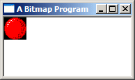

Bitmaps, Device Contexts and BitBlt
Example: bmp_one

GDI
The really great thing about MS Windows is that unlike DOS, you don't need to know anything
about what video hardware you are using to display graphics. Instead, windows provides
an API called the Graphics Device Interface, or GDI. The GDI uses a set of generic graphics
objects that can be used to draw to the screen, to memory, or even to printers.
Device Contexts
The GDI revolves around an object called the Device Context (DC), represented by the data type
HDC (Handle to Device Context). An HDC is basically a handle to something you can
draw on; it can represent the entire screen, an entire window, the client area of a window,
a bitmap stored in memory, or a printer. The nice part is that you don't even need to know which one it
refers to, you can use it basically the same way, which is especially handy for writing custom
drawing functions which you can then use on any of these devices without changing it for each one.
An HDC like most GDI objects is opaque, meaning that
you can't access it's data directly... but you can pass it to various GDI functions that will
operate on it, either to draw something, get information about it, or change the object in
some way.
For example, if you wanted to draw on a window, first you would retreive an HDC
representing the window with GetDC(), then you could use any of the GDI functions
that take an HDC like BitBlt() for drawing images,
TextOut() for drawing text, LineTo() for lines and so on.
Bitmaps
Bitmaps can be loaded much like icons in earlier examples, there is LoadBitmap() for
the most basic functionality of simply loading a bitmap resource, and LoadImage() can
be used to load bitmaps from a *.bmp file just as it can for icons.
One of the quirks of GDI is that you can't draw to bitmap objects (HBITMAP type) directly.
Remember that drawing operations are abstracted by Device Contexts, so in order to use these drawing
functions on a bitmap, you need to create a Memory DC, and then select the HBITMAP into
it with SelectObject(). The effect is that the "device" that the HDC refers to is the bitmap in memory, and when you operate
on the HDC, the resulting graphic operations are applied to the bitmap. As I mentioned, this is actually
a very conveiniant way of doing things, as you can write code that draws to an HDC and you can use it
on a Window DC or a Memory DC without any checks or changes.
You do have the option of manipulating the bitmap data in memory yourself. You can
do this with Device Independant Bitmaps (DIB), and you can even combine GDI and manual operations on the DIB.
However for the time being, this is beyond the scope of the basic tutorial and for now we're just cover the
simpler GDI operations on their own.
GDI Leaks
Once you're finished with an HDC, it's very important to release it (just how you do that depends
on how you got it, which we'll talk about in a bit). GDI objects are limited in number. In
versions of windows prior to Windows 95, they were not only incredably limited but also shared system
wide, so that if one program used up too many, none of the rest would be able to draw anything!
Fortunately this isn't the case any longer, and you could get away with using up quite a lot of
resources in Windows 2000 or XP before anything too bad happened... but it's easy to forget to
free GDI objects and they can quickly run your program out of GDI resources under Windows 9x.
Theorhetically you shouldn't be able to drain the system of GDI resources in NT systems
(NT/2K/XP)
but it still happens in extreme cases, or if you hit the right bug on the nose.
If your program runs fine for a few minutes and then starts drawing strangely or not at all, it's a
good sign that you're leaking GDI resources. HDCs aren't the only GDI objects you need to be careful
about releasing, but generally it's ok to keep things like bitmaps and fonts around for the entire
lifetime of your program, since it's much more efficient than reloading them each time you
need them.
Also, an HDC can only contain one of each type of object (bitmap, font, pen...) at a time,
and when you select a new one in it will return the last one. It's very important that you
deal with this object properly. If you ignore it completely, it might be lost and pile up
in memory as a GDI leak. When an HDC is created, it's also created with some default
objects selected into it... it's a good idea to store these when they are returned to you,
and then when you are completed drawing with the HDC select them back into it.
This is particularly important as you can't delete a GDI object while it is selected into an
HDC. To clean up properly, you should reselect the default object back into the HDC
releasing the object you had selected into it, which you can then
DeleteObject()
successfully.
Trying to
delete a bitmap
you created while that bitmap is selected into an HDC will fail, and probably leak the
bitmap if you assume it has been cleaned up from that point on.
Even Microsoft engineers get caught by this, there was a bug in one of the
Windows screensavers and it
turns out it was because the default bitmap wasn't getting replaced causing a leak and
eventually the screensaver ran out of GDI resources. Be warned! It's an
easy mistake to make.
Displaying Bitmaps
Ok, down to business. The simplest drawing operations on a window occur by handling WM_PAINT.
When your window is first displayed, restored from being minimised, or uncovered from having another window
on top of it, Windows sends the WM_PAINT message to the window to let it know that it needs
to redraw it's contents. When you draw something on the screen it is NOT permanent, it's only there untill
something else draws over it, and you will need to redraw it when that part of your
window becomes visible to the user again.
HBITMAP g_hbmBall = NULL;
case WM_CREATE:
g_hbmBall = LoadBitmap(GetModuleHandle(NULL), MAKEINTRESOURCE(IDB_BALL));
if(g_hbmBall == NULL)
MessageBox(hwnd, "Could not load IDB_BALL!", "Error", MB_OK | MB_ICONEXCLAMATION);
break;
The first step is of course loading the bitmap, this is quite simple with a bitmap resource, there are
no significant differences from loading other resource types. Then we can get down to drawing...
case WM_PAINT:
{
BITMAP bm;
PAINTSTRUCT ps;
HDC hdc = BeginPaint(hwnd, &ps);
HDC hdcMem = CreateCompatibleDC(hdc);
HBITMAP hbmOld = SelectObject(hdcMem, g_hbmBall);
GetObject(g_hbmBall, sizeof(bm), &bm);
BitBlt(hdc, 0, 0, bm.bmWidth, bm.bmHeight, hdcMem, 0, 0, SRCCOPY);
SelectObject(hdcMem, hbmOld);
DeleteDC(hdcMem);
EndPaint(hwnd, &ps);
}
break;
Getting the Window DC
To start off we declare a couple of variables we need. Notice that the first one is a BITMAP,
not an HBITMAP. BITMAP is a struct that holds information about an HBITMAP
which is the actual GDI object. We need a way to get the height and width of the HBITMAP so we
use GetObject() which contrary to it's name doesn't really get an object, but rather information
about an existing one. "GetObjectInfo" would have been a more appropriate label. GetObject() works
for various GDI object types which it can distinguish based on the value of the second parameter, the size of the
structure.
The PAINTSTRUCT is a structure that contains information about the window being painted and what exactly is
going on with the paint message. For most simple tasks, you can simply ignore the information it contains, but it's
required for the call to BeginPaint(). BeginPaint() as it's name suggests is designed
specifically for handling the WM_PAINT message. When not handling a WM_PAINT message you would use
GetDC() which we will see in the timer animation examples in a while... but in WM_PAINT, it's important
to use BeginPaint() and EndPaint().
BeginPaint() returns us an HDC that represents the HWND that we pass to it, the
one that WM_PAINT is being handled for. Any drawing operation we perform on this HDC will immediately display
on the screen.
Setting up a Memory DC for the Bitmap
As I mention above, in order to draw on or with bitmaps, we need to create a DC in memory... the easiest way to do that
here is to CreateCompatibleDC() with the one we already have. This gives us a Memory DC that is
compatible with the color depth and display properties of the HDC for the window.
Now we call SelectObject() to select the bitmap into the DC being careful to store the default
bitmap so that we can replace it later on and not leak GDI objects.
Drawing
Once we've gotten the dimentions of the bitmap filled into the BITMAP struct, we can call
BitBlt() to copy the image from our Memory DC to the Window DC, thus displaying on the screen.
As always, you can look up each parameter in MSDN, but in short they are: The destination, the position
and size, the source and source position, and finally the Raster Operation (ROP code), which specifies how
to do the copy. In this case, we want a simple exact copy of the source made, no fancy stuff.
BitBlt() is probably the all time happiest function in all of the Win32 API and is the staple
diet of anyone learning to write games or other graphics applications in windows. It was probably the
first API that I memorised all the parameters to.
Cleanup
At this point the bitmap should be on the screen, and we need to clean up after ourselves. The first thing
to do is restore the Memory DC to the state it was when we got it, which means replacing our bitmap with the
default one that we saved. Next we can delete it altogether with DeleteDC().
Finally we release the Window DC we got from BeginPaint() using EndPaint().
Destroying an HDC is a little confusing sometimes because there are at least 3 ways to do it
depending on how you got it in the first place. Here's a list of the common methods of gaining an HDC,
and how to release it when you're done.
- GetDC() - ReleaseDC()
- BeginPaint() - EndPaint()
- CreateCompatibleDC() - DeleteDC()
And finally, at the termination of our program, we want to free any resources that we allocated. Technically
speaking this isn't absolutely required, since modern Windows platforms are pretty good at freeing everything
when your program exists, but it's always a good idea to keep track of your own objects because if get lazy
and don't delete them they have a habit of getting loose. And no doubt, there
are still bugs in windows especially older versions that won't clean up all of your GDI objects if you don't
do a thorough job.
case WM_DESTROY:
DeleteObject(g_hbmBall);
PostQuitMessage(0);
break;
|